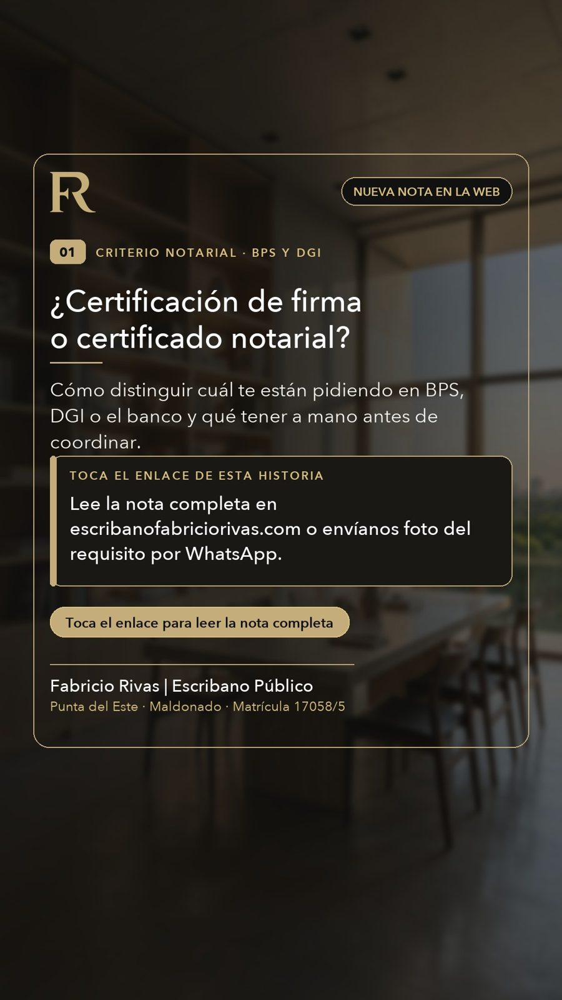
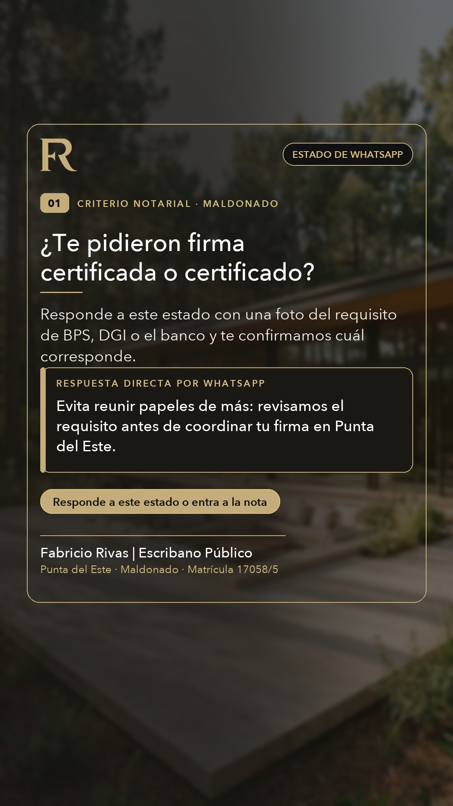

Revisa y aprueba tus publicaciones de la semana en 1 clic
En tu panel de Aprobalo tienes todas las publicaciones listas con sus láminas en grande, su video y su texto completo. Solo entras, miras cada tarjeta y tocas «✅ Aprobar esta publicación» (o escribes ahí mismo si quieres cambiar alguna palabra).
👋 Bienvenido, Fabricio: Cómo funciona tu Sistema Comercial sin saber de Marketing
No necesitas pensar ideas creativas, ni diseñar en Canva, ni redactar textos para redes. Piensa en este panel como un protocolo notarial ya redactado: toda la información técnica de tus 26 páginas web ya está cargada adentro. Tu único rol es seguir los bloques por color (🟢 A · 🔵 B · 🟡 C · 🟣 D) en menos de 10 minutos por semana.
¿No quieres mirar menús hoy? Haz tus 3 clics de hoy aquí mismo:
Descarga la imagen ya diseñada con tu logo, matrícula 17058/5 y márgenes seguros:
Toca el botón de la red donde vas a publicar y pégalo junto con la imagen:
BLOQUE A · PUBLICAR EN REDES
🟢 Hacerlo 2 o 3 veces por semana (10 minutos)¿Para qué sirve? Para que compradores, propietarios y clientes de Maldonado vean que estás activo y te tengan presente antes de firmar una reserva o certificar una firma.
1080×1350.• Si vas a subir una Historia, Reel o Estado de WhatsApp, eliges formato
1080×1920.Tocas "⬇️ Descargar Placa PNG" (o "⬇️ Bajar Secuencia 4 Placas" si quieres subir un carrusel deslizable).
BLOQUE B · NOTAS DE TU WEB Y GOOGLE
🔵 Hacerlo 1 vez por semana cuando hay nota nueva (3 minutos)¿Para qué sirve? Cada nota de Criterio Notarial en tu web responde preguntas que la gente busca en Google (ej. "documentación para vender en Punta del Este"). Si le avisas a Google y la compartes en redes, atraes clientes que están buscando escribano hoy.
NUEVA.
[x] Indexación solicitada.
BLOQUE C · CORREGIR O ENSEÑAR CRITERIO
🟡 Hacerlo solo cuando veas algo para ajustar (1 minuto)¿Para qué sirve? El experto legal eres tú. Si quieres cambiar una palabra en una placa hoy, o quieres dejar asentada una regla técnica para siempre, lo haces sin depender de nadie.
BLOQUE D · CONTROL DE CONSULTAS REALES
🟣 Hacerlo 1 vez por semana los viernes o lunes (30 segundos)¿Para qué sirve? El sistema ya lee solo cuántas visitas entran a tu web y cuántos clics hacen en Google Ads. Lo único que el sistema no ve es tu teléfono privado: cuánta gente terminó escribiéndote de verdad al WhatsApp.
5) y el tema, y tocas "Guardar". Con eso ajustamos las semanas siguientes para publicar más de lo que te trae clientes reales.
🎛️ Configurador por Desplegables
Elige la vertical, el idioma y el formato, o toca "🎲 Rotar" para que el sistema elija la mejor combinación según las búsquedas reales de Google.
✏️ Ajuste Fino del Texto de la Placa
👁️ Pieza Generada en Vivo (Lista para Descargar)
📅 Pack Semana 1 (22 Piezas Renderizadas y Auditadas en Zona Segura) Marca "✅ Aceptar" o "🔄 Rotar" para que el sistema arme las Semanas 2, 3 y 4 a tu medida
🔄 Plan Evolutivo Automático: Semanas 2, 3 y 4 (Se adapta a lo que apruebas)
El sistema equilibra automáticamente las verticales (Real Estate Comprador/Vendedor, Certificaciones en el día, Extranjeros EN/PT, Actas y Sucesiones) y alterna Fotografía Editorial con Placas Técnicas XXL sin IA. Haz clic en cualquier pieza futura para abrirla en el Generador y descargarla.
🗂️ Cola de Borradores Semanales (Rama claude/criterio-borradores · Gate de URL Viva)
Tuteo Formal Estricto Unificado (commit 60cd56b)
Cada lunes a las 09:37 se prepara un nuevo borrador en la rama claude/criterio-borradores. Por regla de Gate de URL Viva (§5), ninguna nota pasa a main ni se enlaza en redes hasta que des el OK explícito ("publicá el borrador").
| Semana / Orden | Título y URL Futura | Evidencia / Keyword | Estado y Gate |
|---|---|---|---|
| Semana 26/10 ✓ PUBLICADA EN VIVO |
¿Certificación de firma o certificado notarial? Cuál te están pidiendo https://escribanofabriciorivas.com/certificacion-de-firma-o-certificado-notarial-1/ |
Keyword: certificado notarial vs certificación de firma, BPS / DGI. Enlaza a /certificados-bps-dgi y /certificar-firma-punta-del-este. |
✓ PUBLICADA + INDEXACIÓN SOLICITADA Calendarizada en Aprobalo Cloud para el Jueves 12/11 · Desplegable GBP / Stories / WA activo abajo |
| Semana 02/11 Borrador #2 Listo |
Declaración jurada con firma certificada: cuándo se pide y qué llevar/declaracion-jurada-firma-certificada-1/
|
Evidencia: consultas reales #1 (09/10 DJ moto) y #3 (14/10 DJ firma certificada). Enlaza a /certificar-firma-punta-del-este y /certificaciones-notariales-1/. |
✓ En Tuteo Formal (6ba1987) En rama claude/criterio-borradores · Pendiente validación de 6 puntos con Fabricio
|
| Semana 09/11 Borrador #3 Listo |
Carta poder o poder para un vehículo: cuándo alcanza y qué se certifica/carta-poder-o-poder-vehiculo-1/
|
Evidencia: 5 consultas reales de automotores + término carta poder cuanto cuesta. Enlaza a /poder-vehiculo y /certificar-firma-punta-del-este. |
✓ En Tuteo Formal Guardado en borrador el 09/11 · Listo para publicar cuando des el OK |
| Lunes 16/11 · 09:37 Próximo (#4) |
Comprar a dueño directo en Punta del Este: qué revisa tu escribano antes de firmar | Vertical Real Estate Comprador · Enlaza a /compraventa-propiedades y /estudio-de-titulos. |
⏰ Agendado Lunes 09:37 |
| Lunes 23/11 · 09:37 En cola (#5) |
Apostilla y legalización para usar un documento extranjero en Uruguay | Vertical Clientes Extranjeros · Enlaza a /poderes-desde-el-exterior. |
En cola §9 |
| Lunes 30/11 · 09:37 En cola (#6) |
Optimización SEO nota EN: buying-property-punta-del-este-foreigners-1 |
Ajuste de title, H1 e introducción para captar búsquedas en inglés. |
En cola §9 |
🌐 Entradas Publicadas en "Criterio Notarial" (`main`) + Sitemap + Indexación en Google Ver sitemap.xml en vivo
Cada vez que se publica una nota en el sitio, debe estar en el Mapa de Sitio (`sitemap.xml`), debe solicitarse su Indexación en Google Search Console y debe salir con su Pack de Publicación en redes. Aquí tienes el control completo:
| Nota / Página en Criterio Notarial | Sitemap / IA | Estado en Google | Acciones Directas (1 Clic) |
|---|
📂 Desplegable de Piezas y Copiar en 1 Clic — Nota #1: "¿Certificación de firma o certificado notarial? (BPS y DGI)" ✓ Calendarizada en Aprobalo (Jueves 12/11) + 3 Formatos Especiales Listos
El Carrusel 4:5 (5 láminas) y el Reel MP4 9:16 con música ya quedaron subidos y calendarizados en Aprobalo Cloud para el jueves 12/11. Aquí tienes listos para descargar y copiar en 1 clic los 3 formatos especiales del circuito (§5 Paso 3):
1. 📍 Google Maps / Mi Negocio (700×700)
utm_source=gbp¿Te pidieron una certificación de firma o un certificado notarial para BPS, DGI o el banco? Los nombres se parecen, pero son dos actos distintos. En esta nueva nota de Criterio Notarial explicamos cómo identificar cuál corresponde según el texto del requisito y qué tener a mano antes de coordinar en Punta del Este y Maldonado. Atendemos consultas em português. WhatsApp directo: +598 99 431 185.

2. 📱 Story IG + Sticker de Enlace (9:16)
utm_source=ig_story
1. Sube esta placa 9:16 a Historias de Instagram.
2. Toca el ícono de Stickers arriba y elige "Enlace" (Link).
3. Pega el link con UTM de abajo y en "Personalizar texto del sticker" pega: Leer nota: Firma vs. Certificado.

3. 💬 Estado de WhatsApp (+598 99 431 185)
utm_source=whatsapp
¿Certificación de firma o certificado notarial? Cómo saber cuál te están pidiendo en BPS, DGI o el banco antes de coordinar 👇
https://escribanofabriciorivas.com/certificacion-de-firma-o-certificado-notarial-1/?utm_source=whatsapp&utm_medium=organic&utm_campaign=criterio_2610

🧠 Sumar Conocimiento o Corregir Criterio Notarial
Si Fabricio o tú notan algo que falta o quieren fijar una regla nueva (de un trámite, ley uruguaya, vocabulario o diseño), escríbelo aquí abajo y elige cómo debe aprenderlo el sistema:
🗂️ Memoria Activa Aprendida por el Sistema
📈 Planilla Maestra Automatizada + 3 Hitos Semanales Programados (§5)
La planilla 1MKGODCaO9v9vD77A8pKsijzKMM8-5-G9osmVCfHADvg se actualiza sola por Apps Script (GA4 todos los días 07:30 · Google Ads y Search Console todos los lunes 06:00) con 10 pestañas vivas (GA4 Diario, GA4 Páginas, GA4 Eventos, GA4 Contactos detalle, GA4 Fuentes, SC Queries, SC Páginas, Ads Campañas, Ads Keywords y Ads Términos de búsqueda).
1️⃣ Viernes 16:54 · Cruce de Consultas Reales
Rutina activa: Se cruzan las consultas reales que entraron a WhatsApp/teléfono de Fabricio con la pestaña GA4 - Contactos detalle y se actualiza claude/Registro semanal de consultas - FR.md.
2️⃣ Lunes 08:54 · Informe de 8 Puntos Fuera de Rango
Rutina activa: Lectura de la planilla + registro del viernes. Reporta solo lo que se sale de rango en 8 puntos (1. Consultas reales vs clics, 2. Gasto/CPC por campaña, 3. Términos para negativizar, 4. Anuncios desaprobados, 5. Páginas con clics sin consulta, 6. Queries SC pos 5–20, 7. Estado técnico GTM v15, 8. Pendientes de aprobación).
3️⃣ Lunes 09:37 · Borrador Criterio Notarial
Rutina activa: Redacción en tuteo formal estricto del siguiente artículo en la rama claude/criterio-borradores (Próximo 09/11: #3 Carta poder o poder para un vehículo → /poder-vehiculo).
🛡️ Reglas Inquebrantables de Medición, GTM v15 y Google Ads (`GEMINI.md` §5) GTM-KKH9D4KS v15 Activo · Congelamiento hasta 18/11/2026
🚫 5 Términos Prohibidos de Negativizar en Ads
Por orden expresa de Fabricio (20/10), nunca agregar como negativas porque traen consultas reales de certificaciones y poderes:
bps · dgi · escribanos habilitados · timbres notariales · registros notariales.
🧊 Ventana de Estabilización (No tocar pujas)
Tras la limpieza de conversiones del 21/10/2026, no tocar presupuestos ni estrategias de puja antes del 18/11/2026 (4 semanas). Revisión de 6 semanas agendada para el 01/12/2026 (evaluar apagar Smart si sigue en 0 consultas reales).
⚖️ Regla "En el día" + Proxies GTM v15
• "En el día": Solo permitido en certificación de firma con documento ya redactado (prohibido en compraventas, poderes o certificados notariales).
• GTM v15 (29/10): whatsapp_click y llamada_click son proxies de intención; la conversión real es la consulta recibida por Fabricio.
📋 Registro Semanal de Consultas Reales (Cruces Viernes 16:54 · 10 casos acumulados) Último cierre: Semana 26–30/10 (3 consultas nuevas)
| # / Fecha | Canal de Entrada | Trámite / Tema Consultado | Estado | Cruce con GA4 / Ads (`1MKGOD...`) |
|---|---|---|---|---|
| #10 · 28/10 Sem. 26–30/10 |
WhatsApp directo | Permiso de menor + apostilla y traducción (viaje a EE.UU., partida de Cuba) | No contestó aún | Sin whatsapp_click ese día (entró directo desde Google Maps / ficha). |
| #9 · 27/10 Sem. 26–30/10 |
WhatsApp directo | Contrato de arrendamiento anual (USD 1.200/mes) en Punta del Este | No contestó aún | El 27/10 GA4 registró 2 whatsapp_click en / desde Google Ads (Google CPC · Escribano Público en Uruguay). |
| #8 · 27/10 Sem. 26–30/10 |
Llamada telefónica | Título automotor + carta poder en Maldonado | En conversación | Vino de la web o extensión de llamada de Ads (previo al tag llamada_click activado el 29/10). Refuerza Borrador #3 (/poder-vehiculo). |
| #1 a #7 · 09/10 al 23/10 Sem. 19–24/10 |
WhatsApp (7 casos) |
• #1 (09/10): Declaración jurada moto (En proceso) • #2 (13/10): Poder vehículo — ✓ Cerrado ($4.500 UYU) • #3 (14/10): DJ con certificación de firmas (Averiguación) • #4 (21/10): Compraventa terreno USD 40k (Posible cliente) • #5 y #6 (22/10): Certificación de firma x2 (En proceso) • #7 (23/10): Compraventa + Sucesión (Posible cliente) |
1 Cerrado · 5 Activos | En ventana 19–24/10: 5 consultas reales vs. 4 whatsapp_click en GA4 (2 de Google CPC en / y /certificar-firma-punta-del-este). |
📊 Lectura Base de Cuentas Conectadas (Corte Inicial: 2026-10-26) API OAuth Conectada: Ads + GA4 + Search Console
Google Ads (Últimos 30 días)
Gasto: 169,96 · 135 Clics
7 conversiones reales de contacto (4 WhatsApp web + 3 llamadas) → ≈ 24,28 por contacto real.
⚠️ Alerta detectada: Ads cuenta 5 "Directions" (cómo llegar) y 17 vistas de página como conversiones.
Google Analytics 4 (Últimos 28 días)
18 Contactos Reales en Web
15 clics al botón de WhatsApp (whatsapp_click) + 3 envíos de formulario (formulario_contacto_enviado) sobre 132 sesiones y 193 páginas vistas.
Cierre Humano Semanal (WhatsApp de Fabricio)
Ingresa cuántas consultas reales entraron al WhatsApp +598 99 431 185 esta semana para cruzar contra GA4:
🔍 Oportunidades Reales en Google Search Console (Dónde atacar con nuevas piezas)
| Búsqueda Real en Google | Clics | Impresiones | Posición | Acción Recomendada en el Generador |
|---|